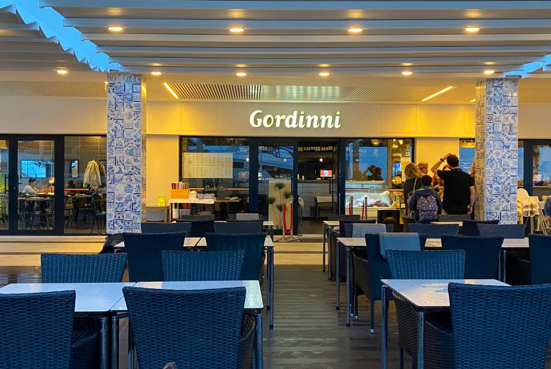
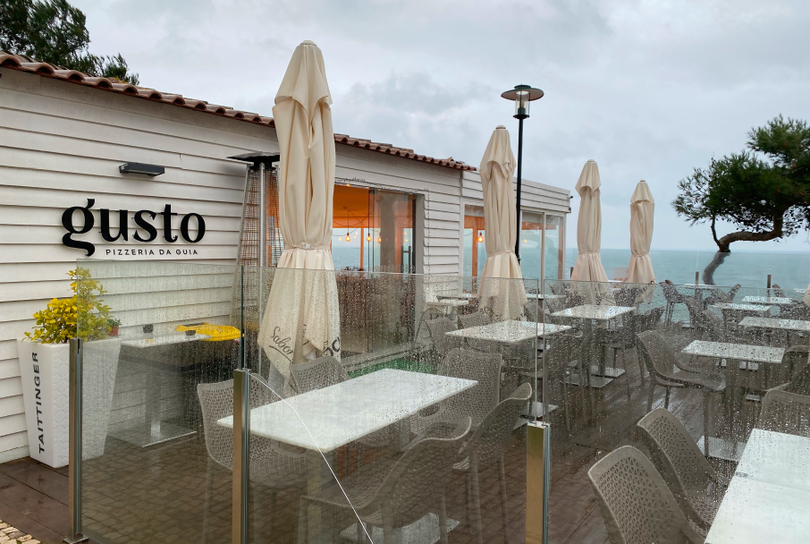
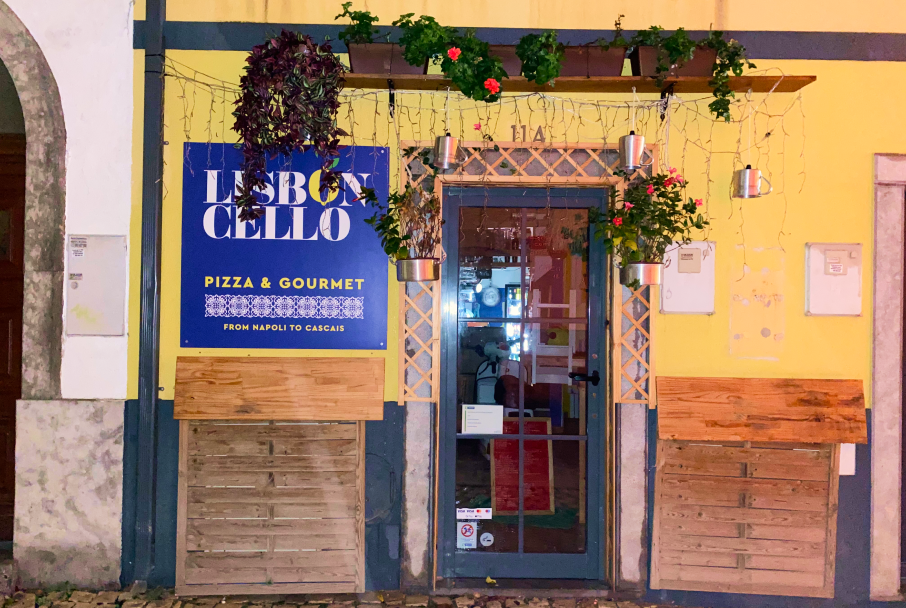
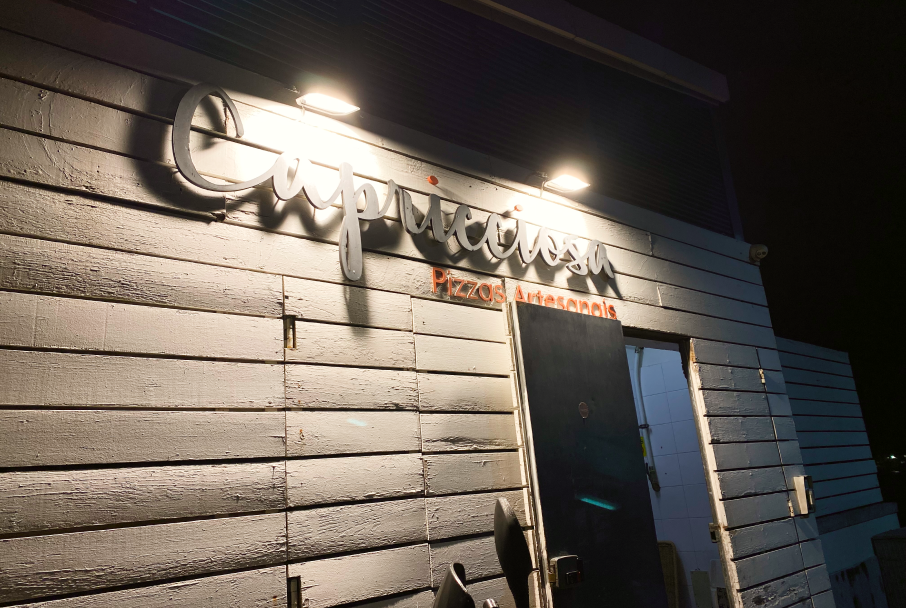
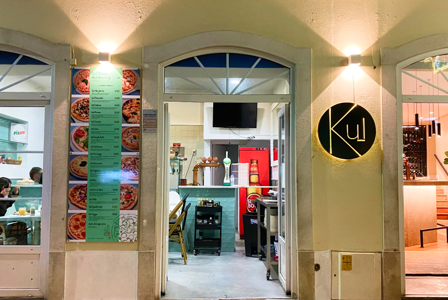
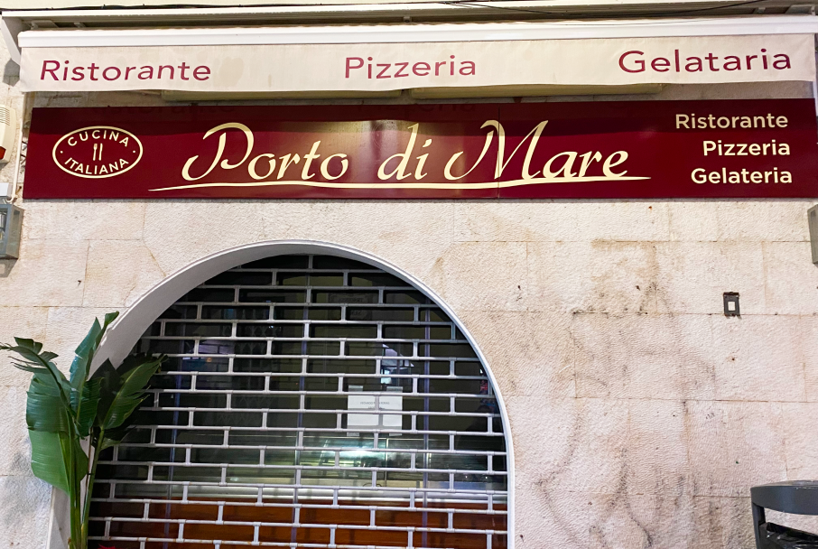
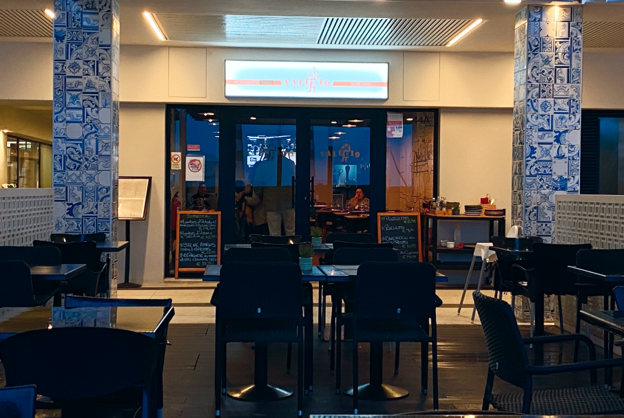
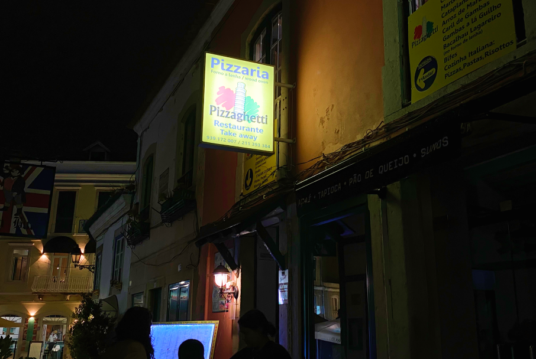

Restaurantes Italianos

La Tagliatella
- R. Dra. Iracy Doyle 40, 2750-427 Cascais
- Preço: €€
- Horário: 12h às 15:30h e das 19hàs 23h (aberto todos os dias)
- Possuí opções vegetarianas
- Classificação: 5/5

Gordinni Cascais
- Marina de Cascais 50-51 Lj, 2750-800 Cascais
- Preço: €€
- Horário: 12h às 23h (aberto todos os dias)
- Possuí opções vegetarianas
- Classificação: 4,8/5

Gusto Pizzeria da Guia
- Avenida Nossa Senhora do Cabo - 101 - Casa da Guia, 2750-374, Cascais
- Preço: €€
- Horário: 12h às 23h (aberto todos os dias)
- Possuí opções vegetarianas
- Classificação: 4,5/5

Lisboncello
- R. dos Navegantes 11, 2759-444 Cascais
- Preço: €€
- Horário: 12h às 15h e 18:30 às 22:30 (segunda, terça, sexta e sábado); 18:30 às 22:30 (quinta e domingo); Encerrado à quarta feira
- Possuí opções vegetarianas
- Classificação: 4,4/5

Capricciosa Cascais
- Alameda da Duquesa de Palmela, Praia da Duquesa 2750-335 Cascais
- Preço: €€
- Horário: 12h às 00h (aberto todos os dias)
- Possuí opções vegetarianas
- Classificação: 4,2/5

Kul
- Largo Luís de Camões 81, 2750-282 Cascais
- Preço: €€
- Horário: 12h às 23:30h (aberto todos os dias)
- Possuí opções vegetarianas
- Classificação: 3,7/5

Porto di Mare
- Rua Freitas Reis - 24A, 2750-357 Cascais
- Preço: €€
- Horário: 11:30 às 23h (quarta à domingo). 11:30 às 22:30 (segunda feira). Encerrado à terça feira.
- Possuí opções vegetarianas
- Classificação: 3,7/5

Valério
- Marina de Cascais Loja 44, 2750-642 Cascais
- Preço: €€
- Horário: 12h às 23h(segunda e terça feira). 12h às 22:30 (restantes dias).
- Possuí opções vegetarianas
- Classificação: 3,5/5

Pizzaghetti
- Rua Frederico Arouca - 5, 2750-354, Cascais
- Preço: €€
- Horário: 12h às 15h e 18h às 23h (aberto todos os dias)
- Possuí opções vegetarianas
- Classificação: 3,5/5